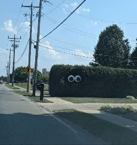

I have inadvertently insulted people all my life. Not just because of my big mouth- which ok yes, has always been a factor too- but because I have facial recognition syndrome.**
I don’t recognize people.
I have walked right past dear friends at parties, boyfriends on the dance floor, doctors helping my dying dad. I can’t tell who’s who in movies, can’t find the waitress, can’t identify partners with whom I’ve had a fabulous dance so we might later do it again.
This is entirely different from not remembering names- that almost universal thing which pretty much everyone, including probably you, experiences.
I literally do not know people at all.
Although, I’m not blind. I do see the body standing there.
I just don’t connect it with the individual, the history. I just am not automatically plugged in to the story that face and body are supposed to represent.
Which can upset folks big time.
Because humans want our story known. That identity of who we are and how we are connected to other folks has been treasured and carefully maintained.
The separate self has been constantly confirmed.
And then along comes some weirdo who can’t give us that.
It’s upsetting.
Which is why it’s been necessary for me to build up a lifetime of various strategies to cover over this condition of mine.
Because naturally I want to respect how dearly everyone clings to the identity that goes with that face and body.
Even while clearly seeing that the sense of self is so flimsy, so tenuous, that all it takes is one person out of the zillions we come across to not “know” us, and our hackles go up.
Meaning is attributed. Meaning about the apparent denier of their identity (moi)- how cold, how rude, how uninvolved, how unkind.
Meaning about themselves- how deficient, how not-enough, how unloved, how uncared-about.
All because one person walks by and doesn’t acknowledge them.
As if, if any of us let up for half a moment, or someone doesn’t do their part in the play-act,
the usual sense of me might go poof and disappear.
Which would not be cool.
Perhaps this is why most of us live a “Look at me!” life.
Look at my body, look at my accomplishments, look at my politics. Look at my rebellion, my beauty, my enlightenment, my wisdom.
Let me post wordy answers to life’s important questions so you see me. Let me lose weight and look younger so I’m not invisible. Let me win a promotion, show you my new book, demonstrate my tennis prowess, perform this concert or dance. Look at my shyness, my shame, my fear in not leaving the house so this me can't be pinned down.
Even long-time seekers of the “ego-less state” are as much about “look at me” as everyone else.
Because it's through witnessing and observation that we verify and reify the me. Through good performance or bad, compliments or denigration- being seen confirms personhood.
We need to be seen as something.
Even if it's terrible and full of flaws, failure and ugliness.
Because something is better than nothing, and better than not existing.
Not existing is bad.
Says the non-existent, only-a-concept, ego.
Though ego is as much a part of existence as anything else, it’s not alive so it can’t die, and it’s not good or bad.
So there’s certainly no need to pretend that it needs anything.
And certainly no need to pretend ego wants to kill itself off.
I mean, as The Mind-Tickler has shown many times before, even Rupert-self is still here, Adya is still here, Mooji, Robert, Tony- they're all still here, all still persons, all still known, all still recognized.
In fact some of these folks actually seem quite eager to be seen.
So there’s not much point in fighting this. The desire to be seen is a basic of humanhood which is never going to change.
We may as well recognize that.
We may as well look at it.
Look at it shine, look at it fail, look at it lose, look at it love, look at it cry, look at it panic, look at it desire, look at it figure out consciousness. Look at it perform, look at it mess up, look at it hide, look at it be.
Witness that person, that story, that self.
Again. Again. Again.
Look at it.
That’s the game here.
Make believe is fun.
Everyone plays.
Even I,
Who sees the you, and sees the me,
And knows us both,
Even when my eyes
recognize
no one.
**About Prosopagnosia:
https://bit.ly/3jfXtPx
Click here to subscribe to get your Mind-Tickled every week.
Click here to see Judy on Buddha at the Gas Pump.
Watch Judy and Robert Saltzman chat here.
"He who knows himself has no doubts about it. Nor does he care whether others recognize his state or not." --Nisargadatta
